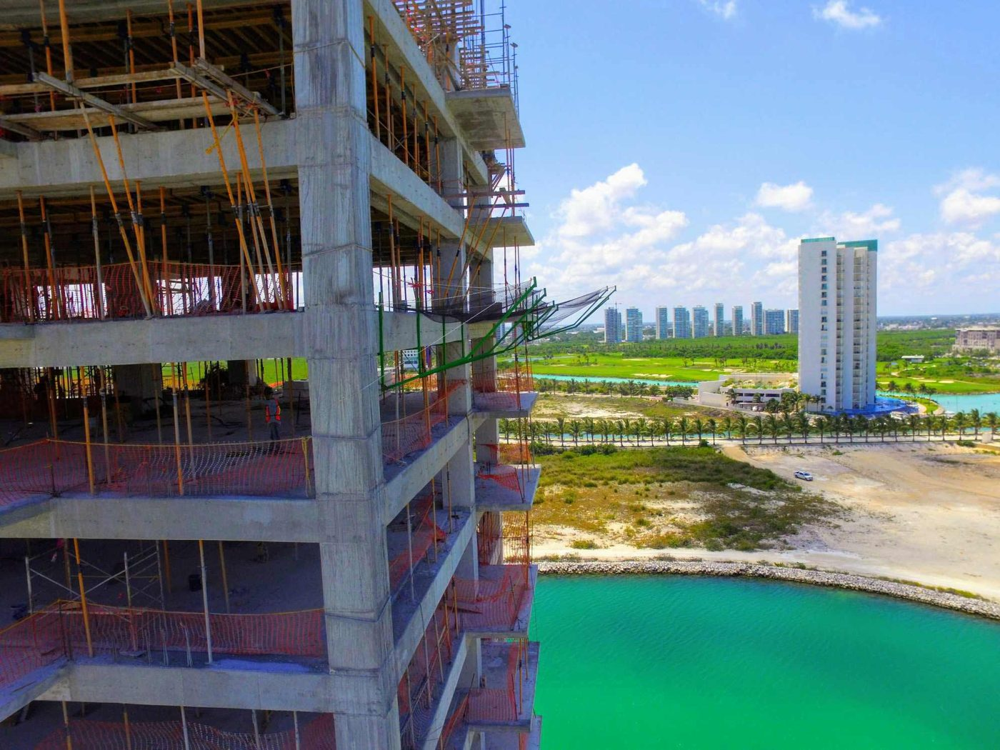
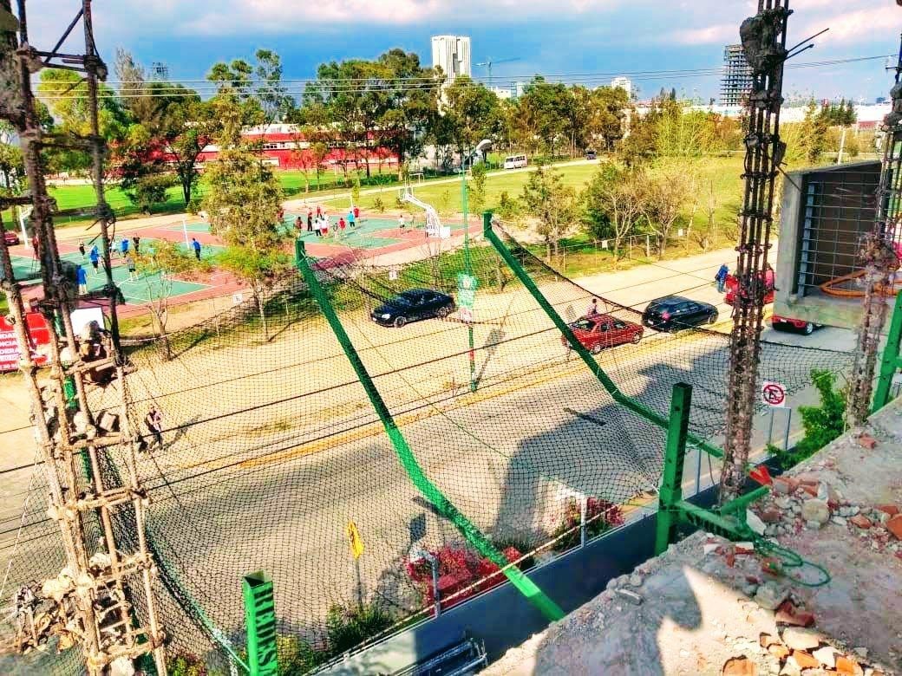
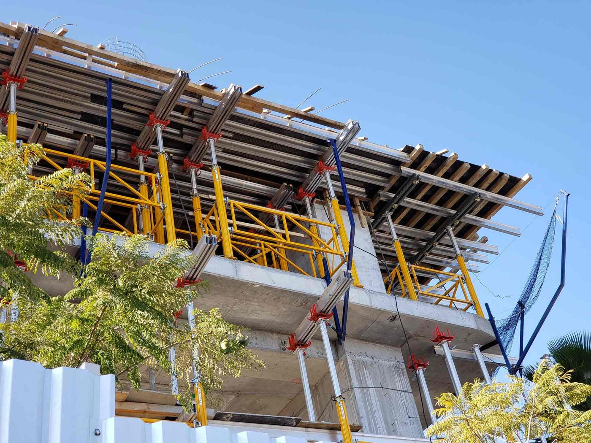

En una obra, la mayoría de los accidentes graves vienen de una caída desde el borde de una losa, un hueco o una cubierta. Una red anticaídas es una protección colectiva: no depende de que cada trabajador se acuerde de engancharse, porque cubre la zona de riesgo para todos al mismo tiempo. También detiene herramienta y material que se caen hacia la calle o a los niveles de abajo.
Cómo está hecha nuestra red anticaídas
- Malla en rombo de 1 pulgada. Es cerrada: además de recibir a una persona, retiene herramienta, escombro y piezas pequeñas que con una malla más abierta pasarían.
- Nudos fijos. Cada cruce va anudado, así la malla no se corre ni se abre cuando recibe un impacto.
- Contorno de piola. Todo el borde lleva una piola de 4 mm que refuerza la red y sirve para amarrarla.
- A la medida. Se cotiza por metro cuadrado según los tramos de tu obra.
Sistema T: red con brazos en el borde de la losa
Es el sistema típico de edificios en construcción. Se colocan brazos metálicos anclados al borde de la losa, que salen hacia afuera de la fachada. Sobre ellos va la red en posición horizontal, formando una especie de bandeja por fuera del edificio.
- Qué protege: el perímetro de la losa donde se trabaja, por fuera de la fachada.
- Cómo trabaja: si alguien cae, la red cede y forma una bolsa que lo recibe y frena la caída, en lugar de pararlo en seco.
- Cuándo se coloca: la losa donde se ancla el brazo ya debe estar fraguada, por eso se va subiendo conforme avanza la obra.

Manejamos tanto la red como los brazos del sistema T.

Sistema S: red horizontal sin estructura
Cuando no se necesitan brazos, la red se coloca horizontal y tensada con una cuerda perimetral, amarrada directamente a puntos firmes de la obra: columnas, vigas o anclajes.
- Dónde se usa: debajo de cubiertas y techumbres, en naves industriales, huecos de losa, cubos de elevador y escaleras.
- Ventaja: no requiere estructura adicional, así que es más rápida de montar y más económica.
Para que la red funcione
- Lo más cerca posible del nivel de trabajo. Entre menos altura de caída, menos golpe recibe la persona y menos se estira la red.
- Limpia. Si se acumula escombro o material sobre la red, quien caiga puede golpearse contra él. Hay que vaciarla seguido.
- Libre por debajo. La red se estira al recibir una caída; no debe haber andamios, varillas ni material justo abajo.
- Bien amarrada y sin huecos. Revisa amarres, uniones entre paños y cortes después de cada movimiento.
Suministro e instalación
Te cotizamos la red sola o instalada en tu obra con nuestro instalador, junto con los brazos del sistema T si los necesitas.
Qué mandarnos para cotizar
- El tipo de obra (edificio, nave, casa) y cuántos niveles tiene.
- Si buscas sistema T (perímetro de losa) o red horizontal sin estructura.
- Los metros lineales de borde a proteger o las medidas de cada hueco.
- Fotos o planos, la ciudad y la fecha en que la necesitas.
Más opciones en redes de protección.
Preguntas frecuentes
¿Qué es una red anticaídas?
Es una red de seguridad que se coloca en la obra para recibir a una persona que cae desde una losa, un hueco o una cubierta, y para detener herramienta y material. Es una protección colectiva.
¿Qué es el sistema T de redes anticaídas?
Es una red horizontal colocada sobre brazos metálicos anclados al borde de la losa, por fuera de la fachada. Protege el perímetro donde se trabaja y se va subiendo conforme avanza la obra.
¿Hay redes anticaídas que no necesiten estructura?
Sí. La red horizontal tensada con cuerda perimetral se amarra directamente a columnas, vigas o anclajes de la obra. Se usa en cubiertas, naves, huecos y cubos de elevador.
¿Qué abertura debe tener una red anticaídas?
Nosotros usamos red de 1 pulgada: además de recibir a una persona, retiene herramienta, escombro y piezas pequeñas.